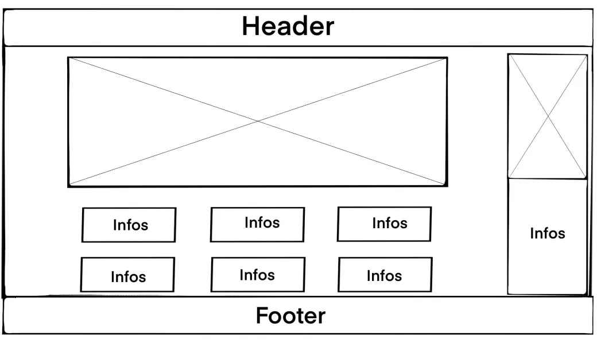
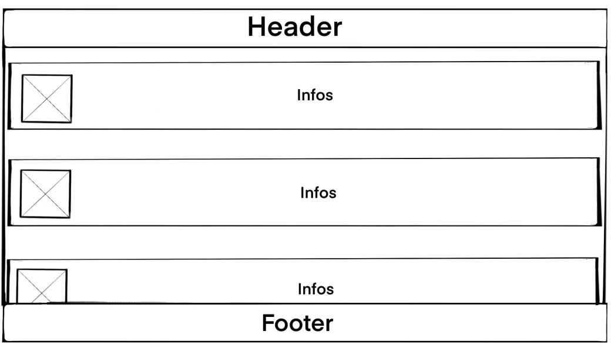
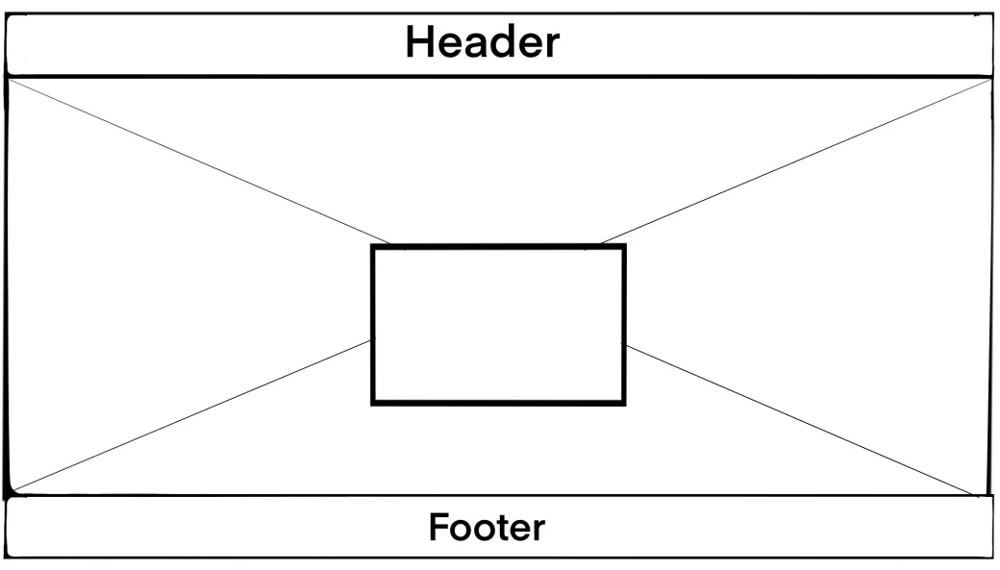
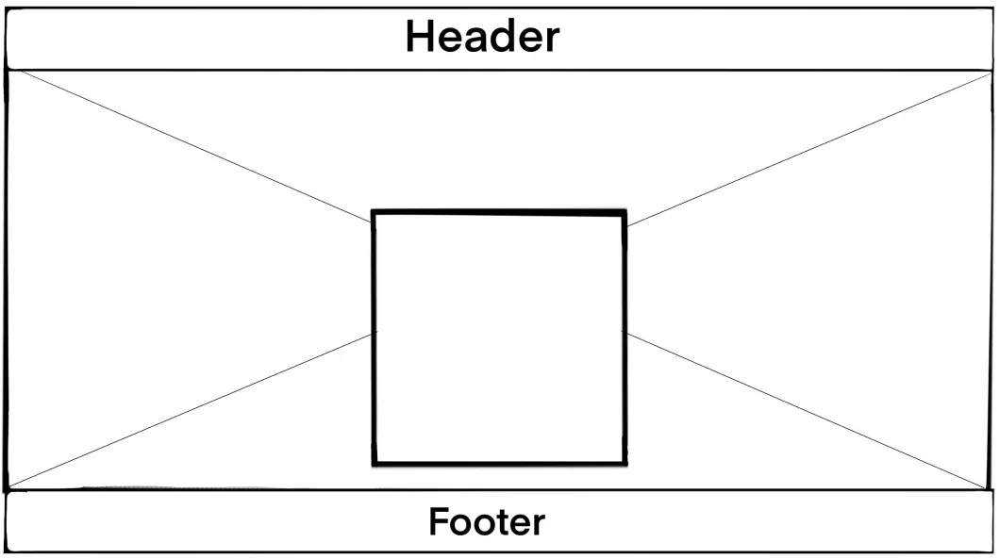
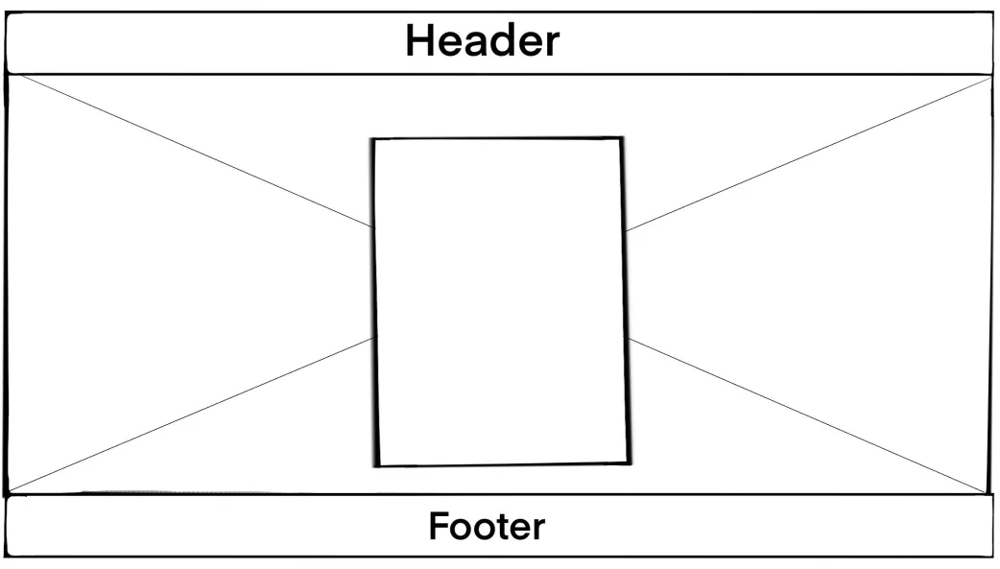
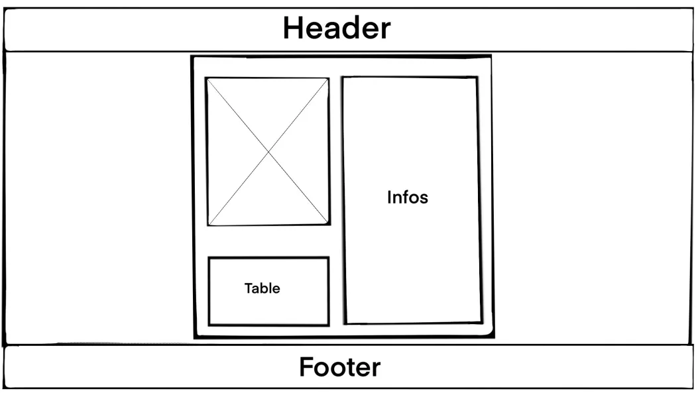

Projektdokumentation: Erstellung einer Website mit HTML und CSS
1. Einleitung
- Projektziel: Entwicklung einer Website, auf der Nutzer Filme nachsehen und bewerten können.
- Hintergrund: Film-Bewertungsplattformen sind beliebt, und wir möchten eine benutzerfreundliche Version erstellen.
- Zielgruppe: Filmfans, die Filme entdecken, bewerten und empfehlen möchten.
2. Anforderungsanalyse
- Funktionale Vorstellung:
Benutzer können:
- Filme entdecken und deren Details anzeigen
- Filme bewerten und Rezensionen schreiben
- Top-Filme anzeigen lassen
- Registrierung und einloggen
- Kontaktseite für Anfragen und Feedback nutzen
- Anforderungen:
- Benutzerfreundliches Design und einfache Navigation
- Responsive Design für verschiedene Bildschirmgrößen
- Visuell ansprechendes Layout
3. Projektplanung und -organisation
- Projektstrukturplan:
- Planung
- Implementierung der HTML-Struktur mit Grid und Flexboxen
- Styling mit CSS
- Testing
- Zeitplan:
- Woche 1: Generelle Planung
- Woche 2: Aufgabenaufteilung
- Ende Woche 2: neu Planen (ein Teammitglied weniger)
- Woche 3: Implementierung der HTML-Struktur und CSS-Styling
- Woche 3: Testing, Fehlerbehebung und Dokumentation
- Ressourcenplanung: Verwendete Hardware, Software und Tools (z.B. Texteditoren, Design-Tools).
- Aufteilung der Webseiten:
- Michelle: Entdecken, Kontakt, Account
- DraxxonHD: Homepage, Login & co., Top-Filme, Detailansicht
4. Konzept und Design
- Design:
- Farbkonzept: Auswahl von Farben für ein ansprechendes Erscheinungsbild
- Schrift: Verwendung geeigneter Schriftarten und -größen für Lesbarkeit
- Inspirationen:
- Wireframes:
- Homepage

- Top-Filme

- Login/ Passwort vergessen/ Registrieren



- Detailansicht

5. Implementierung
- HTML-Layout erstellen:
- Strukturierung der Webseite mit Header, Main und Footer.
- Verwendung von Grid-Layout für die Gesamtstruktur und Flexbox für Details im Hauptbereich
- Integration von Medien wie Filmbildern
- CSS-Styling:
- Definieren von Farben, Schriften und Abständen für ein konsistentes Design
- Responsive Design mit Media Queries und Flexboxen für verschiedene Geräte
- Animationen für interaktive Elemente
6. Vor- und Nachteile von Flexbox und Grid
Flexboxen:
- Vorteile:
- Einfache und intuitive Ausrichtung und Anordnung von Elementen.
- Flexibles Layout für dynamische Anpassungen.
- Effektive Platzierung von Elementen in einer Zeile oder Spalte.
- Nachteile:
- Komplexere Layouts erfordern möglicherweise mehrere verschachtelte Flex-Container.
Grid:
- Vorteile:
- Mächtige Möglichkeit zur Erstellung von Rasterlayouts
- Exakte Kontrolle über die Platzierung von Elementen in Zeilen und Spalten
- Nachteile:
- Komplexere Nutzung
- Begrenzte Unterstützung in älteren Browsern
7. Testing und Qualitätssicherung
- Teststrategie:
- Verwendung von Browser-Entwicklertools
8. Was ausfallen musste
- Weitere Konzepte:
- Einbindung von Serien
- Trailern
- Referenzlinks (wo die Filme erhältlich sind)
- Weitere Webseiten:
9. Was haben wir mitgenommen?
- Lessons Learned: Erfahrungen und Verbesserungsmöglichkeiten für zukünftige Projekte
10. Anhang
- Inspirationen: Verwendete Tools, Dokumentationen und Referenzen.
- Credits: Verwendete Tools, Dokumentationen und Referenzen.